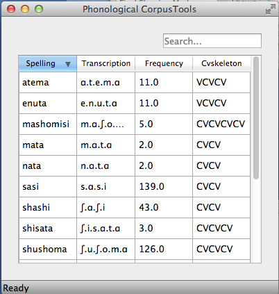

Working with transcriptions and feature systems¶
In order to do phonological analysis, PCT needs to know what segments exist in a corpus, and what features are assigned to each segment. There are a variety of built-in transcription systems and feature systems available, but users can also define their own for custom use. Transcription and feature systems are essentially packaged together as .txt files in the form of a spreadsheet, where particular transcription symbols are mapped to a set of features (described below in Required format of a feature file). In general, however, feature systems (i.e., files containing transcriptions and their features) must be explicitly loaded into PCT before they are available for use. Thus, it makes sense to start by loading in at least one such system before attempting to work with corpora.
Required format of a feature file¶
As mentioned above, transcription and feature systems are packaged together as .txt files in the form of a delimited spreadsheet. The first column in the file lists all the transcription symbols that are to be recognized. Note that this column must be labeled with the name “symbol” in order for PCT to correctly read in the file. Every symbol used in the corpus needs to be in this column. Subsequent columns list individual features that are to be used. Each cell in a row gives either a + or – for each feature, indicating what value the initial symbol in that row has for that feature; a 0 or n can also be used, to indicate that a particular feature is not defined for a given segment (0 is the default in the built-in hayes system; n is the default in the built-in spe system). The following shows an example; keep in mind that this is in fact a tab-delimited .txt file, but the names in the first row are longer than any of the values in subsequent rows, so the alignment is visually misleading. For example, the first row containing symbols contains the symbol [p], which is designated as [-syllabic], [+consonantal], [-sonorant], [-continuant], etc., although the column names aren’t aligned with the feature values visually.

Downloadable transcription and feature choices¶
Currently, the built-in transcription systems that are recognized are IPA, ARPABET (used for the [CMU] dictionary), XSAMPA, CELEX, DISC, and Klatt. These transcription systems can be associated with either the features as laid out in [Mielke2012], which in turn are based on [SPE], or as laid out in [Hayes2009] [1]. Each of these transcription-to-feature mappings is laid out as above in a .txt file that can be downloaded from within PCT. The former system is called “spe” for short within PCT, while the latter is called “hayes.”
To download one of these systems, click on “Corpus” / “Manage feature systems...” and follow these steps:
- Download: Click on “Download feature systems” to open up the relevant dialogue box.
- Transcription: Select which of the transcription systems you want (IPA, ARPABET, XSAMPA, CELEX, DISC, Klatt).
- Feature system: Select which set of features you would like to map the transcription symbols to (SPE or Hayes).
- Saving: Click “OK” to have PCT load in the selected feature file (you must be connected to the internet to have this functionality). The newly downloaded feature file will now appear in your “Manage feature systems” dialogue box, and is available for all subsequent use of PCT unless and until you delete it (done by selecting the system and clicking “Remove selected feature system”). Click “Done” to return to the regular corpus analysis window.
The example below shows the selection of the CELEX transcription system, interpreted using Hayes features.

See Applying / editing feature systems for more information about applying / editing feature systems in conjunction with corpora.
Using a custom feature system¶
In addition to using one of the built-in feature systems, you can design your own transcription-to-feature mapping, of the format specific in Required format of a feature file.
Loading a custom feature system¶
Once you have a feature file in the required format (see Required format of a feature file and Modifying an existing feature system’s text file), go to “Corpus” / “Manage feature systems...” to load it in. Select “Create feature system from text file” and the “Import feature system” dialogue box will open.
- File selection: Specify the file by entering its directory path or by selecting it using the “Choose file...” button.
- Transcription system: Indicate which transcription system this is a feature file for. (For example, you can create a new feature file for existing IPA transcriptions.) If this is a brand-new system for PCT, i.e., a new transcription system being associated with features, then select “Custom” from the dropdown menu. Then, enter a name for the transcription system in the box.
- Feature system: Indicate which feature system is being used (e.g., is this a case of assigning existing SPE features to a new transcription system?). If this is a brand-new set of features, then select “Custom” from the dropdown menu. Then, enter a name for the feature system in the box.
Note: For both existing transcription and feature systems, you still need to include both the transcriptions and the features in the .txt file itself; you can simply indicate here in PCT that these transcriptions and / or features are identical to ones that are already extant in the system, so that they can be used / interpreted consistently. The name of the transcription / feature system file in PCT will conventionally be transcription2features (e.g., ipa2hayes for IPA symbols interpreted using Hayes features), so it’s useful to be consistent about what the names are.
- Delimiter: Indicate what the column delimiter in the custom file is. The default, tab, is indicated by ‘t.’
Click “OK,” and the feature system should now appear in your “Available feature systems” window. Click “Done.” See Applying / editing feature systems for more information about applying the feature system to corpora. The image below shows the dialogue box used to load in the custom, tab-delimited feature file for interpreting the custom “gitksan” transcription system using Hayes features.

Modifying an existing feature system’s text file¶
A custom system can be created from scratch, following the format described in Required format of a feature file. It is probably easier, however, to create a new system by modifying an existing system’s file. While this can be done to a certain extent within PCT itself (see Applying / editing feature systems), large-scale changes are best done in separate text-editing software. To do so, you’ll need to start with an existing file, which can be obtained in one of two ways:
- Through PCT: Download one of the built-in feature systems (Downloadable transcription and feature choices) and apply it to your corpus (Applying / editing feature systems). Then go to “File” / “Export feature system as text file...” and save the file locally.
- Online: You can directly download .txt files with the currently available feature systems from the PCT SourceForge page, under “Files.” One advantage to this method is that there may be additional feature files that are created as .txt files and made available online before they are packaged into the next release of the downloadable software itself.
Once you have the file, open it in whatever software you prefer (e.g., TextEdit, OpenOffice, etc.); it may be easiest to import it into a spreadsheet reader (e.g., Excel, Calc, etc.) in terms of legibility. You can then add new symbols to the first column, feature specifications in the subsequent columns, new feature names, etc., etc. Remember that the name of the first column must always be “symbol” in order for PCT to read the file. Save the new file as a CSV or tab-delimited .txt file, and load it following the instructions in Loading a custom feature system.
Applying / editing feature systems¶
Once a feature system has been loaded into PCT (Downloadable transcription and feature choices, Using a custom feature system), it is available for use with a corpus. To do so, first load in a corpus (Loading in corpora); if you are using a custom corpus or creating a corpus from text, you can select the feature system you want to use during the loading. Once a corpus has been loaded (with or without a feature system), you can edit the system by clicking on “Features” / “View / change feature system....” The following options are shown:
- View system: At the top of the “Edit feature system” dialogue box, you’ll see the current transcription and feature system being used, assuming one has been selected. The first column shows the individual symbols; subsequent columns give the feature specifications for each symbol. Clicking on the name of any column sorts the entire set by the values for that feature; clicking again flips the sort order based on that same column.
- Change transcription and feature systems: If there is no feature system already specified, or if you would like to change the transcription or feature system, use the dropdown menus under “Change feature systems” to select from your currently available systems. If no system is available, or the system you want to use is not available, go back to Downloadable transcription and feature choices or Using a custom feature system to learn how to load feature systems in to PCT. Be sure to click on “Save changes to this corpus’s feature system” after selecting a new feature system in order to actually apply it to the corpus.
- Modify the feature system: You can modify the current feature system
directly within PCT. There are three options. Be sure to click on
“Save changes to this corpus’s feature system” after adding a new
segment or feature, or editing the feature specifications of a segment,
in order to actually apply the changes to the corpus:
- Add segment: To add a new segment and its associated feature values to the current feature system, click on “Add segment.” A new dialogue box will open up, with a space to input the symbol and dropdown menus for all of the features expected in the current system. You can also specify that all features should be set to a particular value, and then change / edit individual features as needed. Simply fill in all the values and click “OK”; the symbol and features will be added to the feature system.
- Edit segment: To change the feature specifications of an existing segment, click on the row containing that segment and then on “Edit Segment.” Then use the resulting dialogue box to change the feature specifications.
- Add feature: To add an additional feature to the current system, click on “Add feature.” Enter the name of the feature in the dialogue box, select the default value that all segments will have for this feature, and hit “OK.” The feature will be added to all the segments in the corpus, with the default value. To change the value of the feature for each segment, simply click on the segment and then use the “Edit segment” functionality described above; the new feature will automatically be added to the dialogue box for each segment.
- Corpus inventory coverage: There are two tools built in to help you
check the coverage in your corpus.
- Extraneous symbols: The built-in feature systems are fairly extensive, and may include symbols for sounds that do not occur in your corpus. Click on “Hide all segments not used by corpus” to remove such segments from the viewing window. (This does NOT remove them from the feature system itself; it just de-clutters your view of the system.) To revert back to the full system, simply click on “Show full feature system.”
- Corpus coverage: It’s possible that there are symbols used in your corpus that are not covered in whatever feature system you have selected. To find out, click on “Check corpus inventory coverage.” A new window will appear that either confirms that all symbols in the corpus are mapped onto features, or lists the symbols that are currently lacking. If there are symbols that are missing, you’ll need to add them before doing phonological analysis on the corpus. You can do so in two ways: (1) adding them within the PCT interface, following the instructions under “Modify the feature system,” immediately below; or (2) changing the feature system itself by editing the .txt file and reloading it (more information given in Modifying an existing feature system’s text file).
- Display options: The standard view (shown below) is to display the segments and features as a matrix. One can also select “tree” view, which allows one to see a list of the segments included in the transcription system, organized by phonetic characteristics (but currently without all of their feature specifications).
Creating new tiers in the corpus¶
It is possible to have PCT extract a tier of segments from the transcribed words in your corpus, based on any segment, feature, or set of features that are defined for your corpus. For example, it is easy to extract separate tiers for consonants and vowels. This extraction is particularly useful if, for example, one is interested in looking at an analysis of predictability of distribution where the conditioning contexts are non-adjacent segments; the extraction of a tier allows otherwise non-adjacent segments to be adjacent to each other on the selected tier. For example, one could examine the possibility of vowel height harmony in language X by extracting the vowels from all words and then calculating the extent to which high / low vowels are predictably distributed in high / low vowel contexts. (See also Adding a column for information on how to add a column to a corpus, which contains any kind of user-specified information, and Adding a “count” column for information on how to add a count column to a corpus, which contains counts of specific elements within each entry in the corpus.)
To create a new tier for a corpus that is currently open, click on the “Corpus” menu and select either “Add tier...” or “Add abstract tier...”; the “create tier” dialogue box opens. An “abstract” tier is a tier that is not based directly on the transcriptins themselves, but rather abstracts to a higher level. As of January 2015, the only abstract tier available is a CV skeleton tier. Before creating the tier, you can “preview” the tier as in the following example; this shows what segments PCT thinks are consonants and vowels in the current corpus.

The example corpus after an abstract CV tier has been added:
{kind=link}
To create a less abstract tier, i.e., one that is just an extraction of all transcription symbols in the corpus that have some particular feature value, use the following instructions after choosing “Corpus” / “Add tier...”:
- Name: Enter a short-hand name for the tier, which will appear as the column header in your corpus. For example, “vowels” or “consonants” or “nasals.”
- Basis for creating tier: You can create the tier using natural classes if you base the tier on features; you can also create “unnatural” tiers that are simply extractions of any set of user-defined segments.
- Segments: If creating the tier on segments, you’ll see all the segments in your corpus in a preview window arranged roughly along the lines of a standard IPA chart. Select as many of these as you want. The image below shows an example of creating a tier to contain all the non-mid vowels in the example corpus:

- Features: If you’re creating the tier based on features, you’ll see the list of all available features in your corpus on the left. Select a feature that will be used to define the tier. To define the tier based on positive values for that feature, select “Add [+feature].” To define the tier based on negative values, select “Add [-feature].” For example, to define a vowel tier, one might select the [voc] feature from the SPE feature set, and then add positive values, as shown below. The selected feature will appear in the right-hand menu. To add additional features, repeat this step. For example, one could define a sibilant tier in the SPE system by selecting [+cor] and [+strid]. The features available will be based on whatever feature system has been selected as part of the corpus; see Downloadable transcription and feature choices for information on selecting or defining different features for the segments in the corpus.

- Preview: To see which segments the currently selected feature values will extract, select “Preview tier.” This will show both the set of segments included by the selected feature values, as well as the segments that are excluded (to help verify that the selection is as expected). A vowel tier based on [+voc] in the example corpus is previewed below:

- Removing a feature: To remove a selected feature, click on that feature in the “Selected features” menu and then choose “Remove feature.”
- Finalizing the tier: To create the tier and return to the corpus, click on “Create tier.” It may take a moment to process the entire corpus, but a new column should be added to the corpus that shows the segments matching these feature selections for every word in the corpus.
- Saving the tier: The tier can be saved along with the corpus for future use by selecting “Corpus” / “Save corpus” from the menu items (this will be done automatically if auto-save is on; see Preferences). It is also possible to export the corpus as a text file (.txt), which can be opened in other software, by selecting “File” / “Export corpus as text file.”
- Removing a tier: To delete a tier that has been created, simply click on “Corpus” / “Remove tier or column...” and select the tier you want to remove; then click “Remove.” You can also right-click on the column name and select “Remove column.” Note that only tiers that have been added through PCT can be removed; tiers that are inherent in loaded corpora cannot be removed in PCT. You can, of course, export the corpus itself to a text file, remove the column manually, and then re-load the changed corpus. To remove all the added tiers, leaving only the inherent (“essential”) tiers in the corpus, select “Remove all non-essential columns.” PCT will list which columns are non-essential and verify that you want to remove them before the removal is permanent. The “essential” columns for most corpora are “Spelling,” “Transcription,” and “Frequency.”
The following shows an example of the a vowel tier added to the example corpus using the SPE feature system:

Adding, editing, and removing words, columns, and tiers¶
Adding a column¶
In addition to the ability to add tiers based on information already in the corpus, as described above in Creating new tiers in the corpus, it is also possible to add a column containing any other user-specified information to a corpus (see also Adding a “count” column to find out how to add a column based on counts of elements within each corpus entry). For example, one could add a “Part of Speech” column and indicate what the lexical category of each entry in the corpus is. Note that as a general proposition, it is probably easier to add such information in a spreadsheet before importing the corpus to PCT, where sorting and batch updates are easier, but we include this functionality in a basic form in case it is useful.
To add a column, go to “Corpus” / “Add column...” and do the following:
- Name: Enter the name of the new column.
- Type of column: Indicate what type of information the column will contain. The choices are “Spelling,” “Numeric,” and “Factor.” A spelling column will have values that are written out as strings of characters, with each entry taken to be a unique string. A numeric column will have numeric values, upon with mathematical operations can be performed. A factor column will have values that can contain characters or numbers, but are limited in number, as in the levels of a categorical variable. This is useful when, for example, the column encodes categorical information such as part of speech, with each entry in the corpus belonging to one of a limited set of categories such as “Noun,” “Verb,” and “Preposition.”
- Default value: A default value for the column can be entered if desired, such that every entry in the corpus receives that value in the new column. Individual entries can subsequently be edited to reflect its actual value (see Editing a word).
Click “Add column” to return to the corpus and see the new column, with its default values.
Adding a “count” column¶
In addition to adding columns that contain any kind of user-specified information (Adding a column), and tiers that contain phonological information based on the entries themselves (Creating new tiers in the corpus), one can also add “Count” columns, which contain information about the number of occurrences of a feature or segment in each entry in a corpus. For example, one could add a column that lists, for each entry, the number of round vowels that are contained in that entry. To add a count column, go to “Corpus” / “Add count column...” and then do the following:
- Name: Enter the name of the new column.
- Tier: Specify what tier the count column should refer to in order to determine the counts (e.g., transcription or a derived tier such as a vowel tier).
- Segment selection: Choose to count things based on either segments or features. If segments are counted, select the segment or segments from the inventory (click on “Consonants” and / or “Vowels” to reveal which segments are available in the inventory). If features are selected, click on each feature and then the value of that feature that should be used.
Click “Add count column” to return to the corpus and see the new column, with its count values automatically filled in.
Removing a tier or column¶
To delete a tier or column that has been created, simply click on “Corpus” / “Remove tier or column...” and select the tier you want to remove; then click “Remove.” Note that only tiers that have been added through PCT can be removed; tiers that are inherent in loaded corpora cannot be removed in PCT. You can, of course, export the corpus itself to a text file, remove the column manually, and then re-load the changed corpus. To remove all the added tiers, leaving only the inherent (“essential”) tiers in the corpus, select “Remove all non-essential columns.” PCT will list which columns are non-essential and verify that you want to remove them before the removal is permanent. The “essential” columns for most corpora are “Spelling,” “Transcription,” and “Frequency.”
Adding a word¶
As a general proposition, we don’t recommend using PCT as a database manager. It is designed to facilitate analyses of pre-existing corpora rather than to be an interface for creating corpora. That said, it is occasionally useful to be able to add a word to a pre-existing corpus in PCT. Note that this function will actually add the word to the corpus (and, if auto-save is on, the word will be saved automatically in future iterations of the corpus). If you simply need to add a word temporarily, e.g., to calculate the neighbourhood density of a hypothetical word given the current corpus, you can also add a word in the relevant function’s dialogue box, without adding the word permanently to the corpus.
To do add the word globally, howveer, go to “Corpus” / “Add new word...” and do the following:
- Spelling: Type in the orthographic representation of the new word.
- Transcription: To add in the phonetic transcription of the new word, it is best to use the provided inventory. While it is possible to type directly in to the transcription box, using the provided inventory will ensure that all characters are understood by PCT to correspond to existing characters in the corpus (with their concomitant featural interpretation). Click on “Show inventory” and then choose to show “Consonants,” “Vowels,” and/or other. (If there is no featural interpretation of your inventory, you will simply see a list of all the available segments, but they will not be classifed by major category.) Clicking on the individual segments will add them to the transcription. The selections will remain even when the sub-inventories are hidden; we allow for showing / hiding the inventories to ensure that all relevant buttons on the dialogue box are available, even on small computer screens. Note that you do NOT need to include word boundaries at the beginning and end of the word, even when the boundary symbol is included as a member of the inventory; these will be assumed automatically by PCT.
- Frequency: Enter the token frequency of this word.
- Other: If there are other tiers or columns in your corpus, you can also enter the relevant values for those columns in the dialogue box. For tiers that are defined via features, the values should be automatically populated as you enter the transcription. E.g., if you have a vowel tier, and add the word [pim.ku] to your corpus by selecting the relevant segments from the inventory, the vowel tier should automatically fill in the entry as [i.u].
Once all values are filled in, select “Create word” to return to the corpus with the word added. If auto-save is not on, you can save this new version of the corpus for future use by going to “File” / “Save corpus.” If you have added a word and the corpus has NOT been saved (either manually or through Auto-save) afterward, and then try to quit PCT, it will warn you that you have unsaved changes and ask that you verify that you want to quit without saving them.
Removing a word¶
To remove a word from the corpus, select it in the corpus view and right-click (ctrl-click on a Mac) on it. Choose “Remove word” from the menu. Regardless of whether warnings are turned on or not (see Help and warnings), PCT will verify that you want to remove the word before commiting the change. Word removal is not auto-saved with a corpus, even if “Auto-save” is turned on (see Preferences); if you want to save the new version of the corpus with the word removed, you should explicitly go to “File” / “Save corpus.” If you have removed a word and NOT manually saved the corpus afterward, and then try to quit PCT, it will again warn you that you have unsaved changes and ask that you verify that you want to quit.
Editing a word¶
To edit a word in the corpus, right-click on the word’s entry and chooser “Edit word details,” or double-click the word’s entry in the corpus. A dialogue box opens that shows the word’s spelling, transcription, frequency, and any other information that is included in the corpus. Most of these entries can be edited manually, though a few, such as tiers that are dependent on a word’s transcription, cannot themselves be directly edited. To edit such a derived tier, edit the transcription of the word; the derived tier will update automatically as the new transcription is provided.
Hiding / showing non-transcribed items¶
When working with a corpus, it is possible to hide all entries that do not have a transcription (if any such entries exist). To do this, right-click anywhere in the corpus itself and select “Hide non-transcribed items.” To reveal them again, right-click anywhere in the corpus itself and select “Show non-transcribed items.”
Phonological Search¶
PCT allows you to do searches for various strings, defined by segments or features. The search returns two types of information: one, a general count of the number of entries that fit the search description, and two, the actual list of all the words in the corpus that contain the specified string. To conduct a search, choose “Corpus” / “Phonological search...” and do the following:
- Basis for search: Select either segments or features to search for.
- Segment-based search selection: If segments are chosen as the basis of the search, you will see the segmental inventory of your corpus. Select a segment that you want to search for.
- Feature-based search selection: If features are chosen as the basis of the search, you will see the features associated with your corpus. Select the feature and then the value of that feature that you want to search for; it will automatically be added to the list. Multiple features can be selected (e.g., [-voice, -continuant] if one wants to search for voiceless stops).
- Environments: Click on “Environments” to add one or more environments that you want to search for that contain the specified segment. Both the left- and right-hand side of the environment can be specified, and each can be specified using either segments (automatically populated by your corpus’ inventory) or features (automatically populated by the feature system associated with the corpus). After selecting an environment by clicking on the relevant segments or features, click on “Add” if it is the last environment you want to add, or “Add and create another” if you want to add additional environments.
An example of adding environments (in this case, the environment “word-initial, before a vowel”):

- Tier: Select the tier on which phonological search should be performed. The default would be the transcription tier, so that phonological environments are defined locally. But, for example, if a vowel tier is selected, then one could search for the occurrence of, e.g., [i] before mid vowels on that tier (hence ignoring intervening consonants).
An example of the phonological search window, set up to search for voiceless stops word-initially before vowels and between [a] vowels, on the transcription tier:

6. Results: Once all selections have been made, click on “Calculate phonological search.” If there is not already an existing results table, or you want to start a new once, choose the “Start new results table” option. If you want to add the results to a pre-existing table, choose the “Add to current results table” option. The results appear in a new dialogue box that first shows the summary results, i.e., a list that contains the segment that was searched for, each environment that was searched for, the total count of words that contain that segment in that environment, and the total token frequency for those words (note that these are the frequencies of the WORDS containing the specified environments, so if for example, a particular word contains multiple instances of the same environment, this is NOT reflected in the counts). The individual words in the corpus that match the search criteria can be shown by clicking on “Show individual results” at the bottom of the screen; this opens a new dialogue box in which each word in the corpus that matches the search criteria is listed, including the transcription of the word, the segment that was found that matches the search criteria, and which environment that segment occurred in in that word. Note that the results can be sorted by any of the columns by clicking on that column’s name (e.g., to get all the words that contained the [a_a] environment together, simply click on the “Environment” label at the top of that column). To return to the summary results, click on “Show summary results.” Each set of results can be saved to a .txt file by clicking “Save to file” at the bottom of the relevant results window. To return to the search selection dialogue box, click on “Reopen function dialogue.” Otherwise, when finished, click on “Close window” to return to the corpus.
An example of the summary results window for the above phonological search:

And the individual results from the same search, sorted by environment:

| [1] | Note that the original [Hayes2009] system does not include diphthongs. We have included featural interpretations for common English diphthongs using two additional features, [diphthong] and [front-diphthong]. The former has a [+] value for all diphthongs, a [-] value for all vowels that are not diphthongs, and a [0] value for non-vowels. The latter references the end point of a diphthong; [aɪ], [eɪ], and [ɔɪ] are [+front-diphthong], [aʊ] and [oʊ] are [-front-diphthong]. All other segments are left unspecified for this feature. Other vowel features for diphthongs are specified based on the first element of the diphthong; e.g., all of [aɪ], [eɪ], [ɔɪ], [aʊ], and [oʊ] are [-high]; of these five, only [aɪ] and [aʊ] are [+low]; only [eɪ] is [+front]; only [oʊ] and [ɔɪ] are [+back]; only [oʊ] and [ɔɪ] are [+round]. |